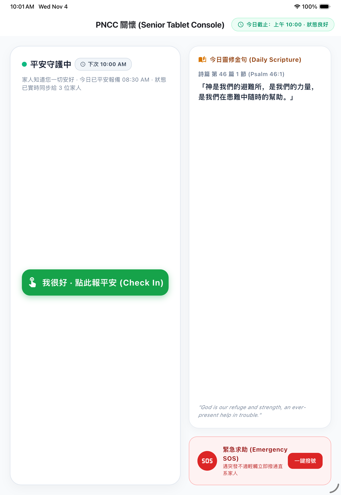

- 【研发背景】：应对独居长者日益增长的居家安全隐患，防止意外发生无人知晓。
- 【设计哲学】：“零干扰、高尊严”。不安装侵入性摄像头，不追踪私密轨迹，用最质朴的点按确认平安。
- 【核心体验】：长辈每天只需在手机或手表上轻点一下，全家子女即可实时收到平安动态。
- 【生态覆盖】：已全面适配 iPhone、iPad、Apple Watch 独立手表端及 Android 手机平板。
🎬 视频演示动作：展示软件冷启动过程。画面首先在 iPhone 15 上启动，接着切换到 iPad Pro 宽屏端和 Apple Watch 桌面，呈现三端同时显示安全打卡主界面的协调联动画面。
⏱️ 参考时长：约 60 秒
⏱️ 参考时长：约 60 秒
